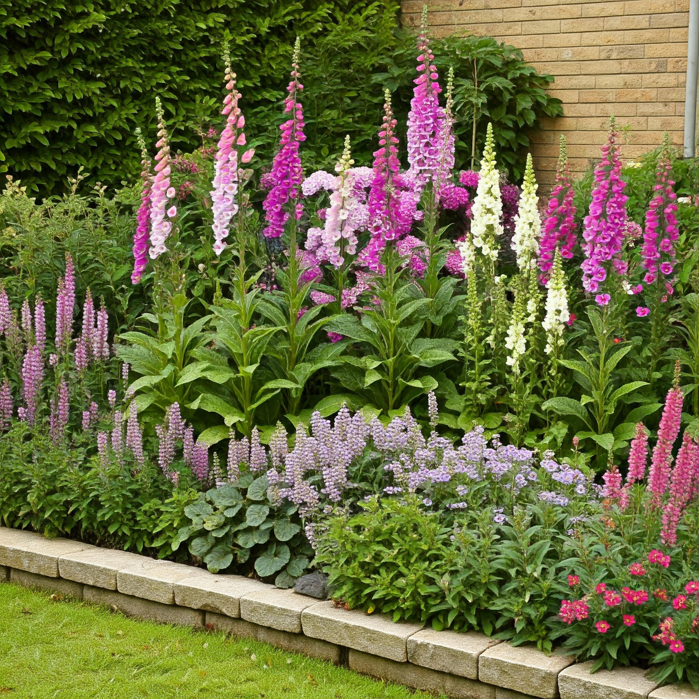
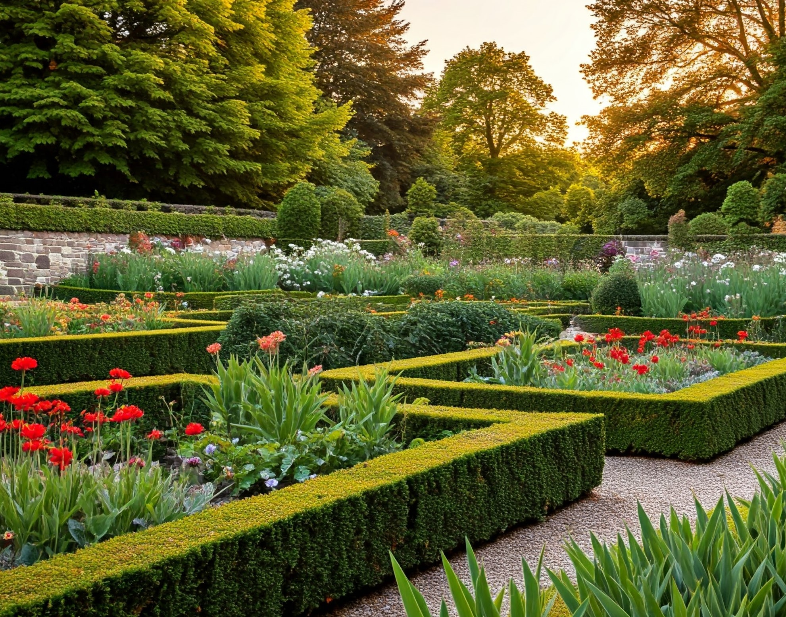
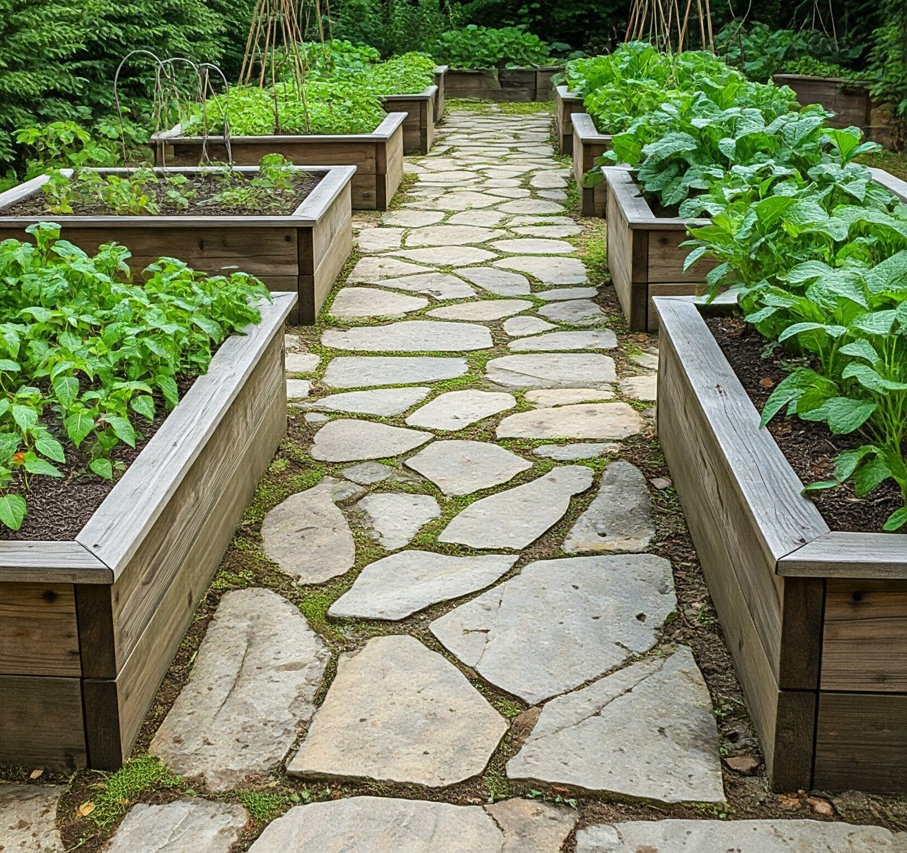

Intro

Kanwal Lawn and Garden Services is a local family run business.
Providing a range of quality and professional gardening and lawn
care services, at a competitive price.
As a local business we want to provide quality lawn and garden care
to the local homes of Kanwal, Hamlyn Terrace, Gorokan, Lake Haven,
Wadalba, Woongarah and other surrounding areas.
With nearly 20 years of Horticultural experience we can provide the
level of care and professionalism you expect at a reasonable
competitive price leaving your home feeling like the peaceful
sanctuary it was meant to be.
Call us now on
0481 699 521
What we do

Our services include
- Mowing
- Hedging
- Pruning
- Mulching
- Planting
- Irrigation
- Weeding
- Turfing
- Top dressing
- New Gardens
- Pest and Disease control
- Bindi control
Call us now on
0481 699 521
About

Kanwal Lawn and Garden services is run by Richard Hutchings. A keen
local gardener who has been gardening all over the Central Coast and
northern suburbs of Sydney. Richard has a great interest in
sustainability, permaculture and botanicals not to mention a love of
exotic and native plant species and would be happy to talk about any
ideas or garden concepts you might be dreaming up.
With close on 20 years professional experience in the industry, we
can provide the level of care and professionalism you expect at a
reasonable competitive price.
Call us now on
0481 699 521